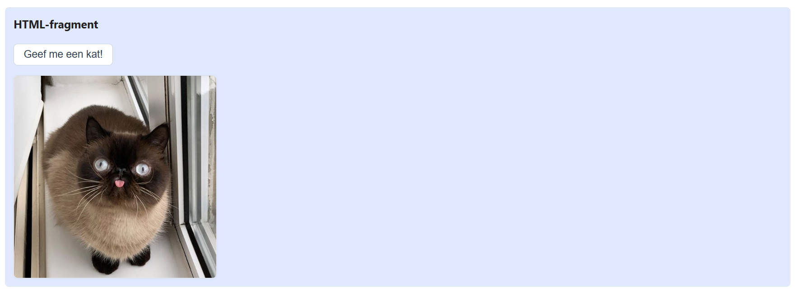
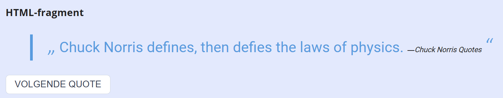
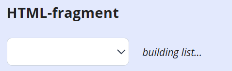
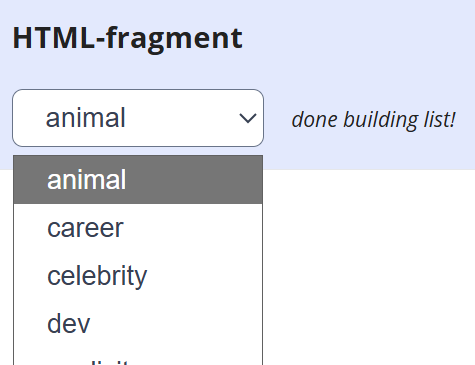
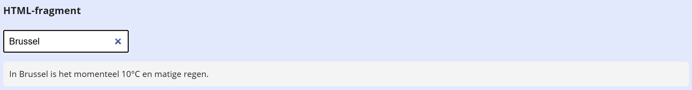
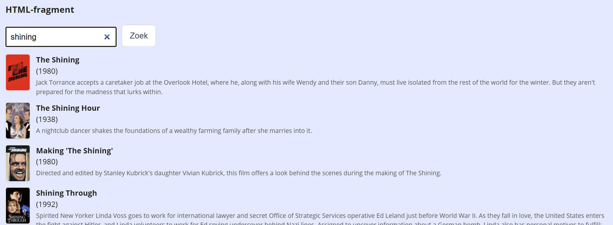

Hoe werk je dit oefenblad af?
- Open de oefeningenfolder in VS Code.
- Open deze pagina in VS Code via live view.
- Open de console van de developer tools.
- Elke oefening begint met een stukje theorie, en één of meer opdrachten.
- Vul telkens het overeenkomende stukje code in js/scripts.js aan
- De bijhorende HTML fragmenten vind je onder elke opgave met een lichtblauwe achtergrond
Overzicht van de oefeningen:
Basic fetch
Doel: een basis fetch op een open API.
Theorie
Kort gezegd is een API call een url die gestructureerde data teruggeeft vanop een externe server. Neem b.v. de Dog API. In de documentatie vind je volgende URL's:
- https://dog.ceo/api/breeds/image/random: een random foto van een hond
- https://dog.ceo/api/breeds/image/random/3: drie random foto's van honden
- https://dog.ceo/api/breeds/list/all: een lijst van alle rassen
Vanaf nu noemen we dergelijke URL's API endpoints. Klik bijvoorbeeld op de tweede link: je krijgt geen HTML, maar data terug in een Javascript object-achtige notatie, JSON (JavaScript Object Notation) genoemd:
{
"message": [
"https:\/\/images.dog.ceo\/breeds\/terrier-dandie\/n02096437_3112.jpg",
"https:\/\/images.dog.ceo\/breeds\/bulldog-english\/jager-1.jpg",
"https:\/\/images.dog.ceo\/breeds\/otterhound\/n02091635_3475.jpg"
],
"status": "success"
}De data van deze URL kan je opvragen en verwerken in Javascript in drie stappen:
- vraag de URL op met
fetch() - zet de response body om naar JSON
- haal de gewenste data uit de JSON en verwerk het
Een voorbeeld van een functie fetchRandomFotos() met een fetch op het tweede endpoint, die een array van url's teruggeeft (kattenfoto's):
async function fetchRandomFotos(num) {
const url = `https://dog.ceo/api/breeds/image/random/${num}`;
// 1. doe een request op de URL en wacht op antwoord
const response = await fetch(url);
// 2. zet de data uit de body om naar JSON en wacht tot het klaar is
const data = await response.json();
console.log(data); // altijd een goed idee de data te inspecteren in de console
// 3. verwerk de data, in dit geval: return de array van foto's in 'message'
return data.message;
}Je kan deze functie dan gebruiken in b.v. een button click event handler:
async function handleBtnFetchClick() {
const fotos = await fetchRandomFotos(5); // fetch 5 random foto's en wacht op het resultaat
// ... verwerk nu de array van URL's, b.v. om 5 img's te tonen
}
btnFetch.addEventListener('click', handleBtnFetchClick);
Op gelijkaardige manier kan je functies schrijven en gebruiken voor de andere twee endpoints.
Opdracht A – geef me een kat
We gebruiken de Cat as a service (CATAAS) API.
- schrijf een asynchrone functie
fetchCatImage()die de URL van een random afbeelding teruggeeft; gebruik dit eindpunt:https://cataas.com/cat?json=true - gebruik deze functie om in de click event handler van de button een random afbeelding op te vragen, en te koppelen aan de
srcvan de afbeelding
Screenshot:

HTML-fragment

Opdracht B – random quote
We gebruiken de Chuck Norris API.
- schrijf een asynchrone functie, b.v.
fetchRandomQuote(), die een random Chuck Norris quote teruggeeft - schrijf een tweede asynchrone functie, b.v.
showRandomQuote(), die een quote opvraagt met de eerste functie, en instelt in de blockquote - roep deze tweede functie op bij de start van de applicatie
- koppel deze tweede functie tenslotte ook aan het
clickevent van de "volgende quote" knop
Screenshot:

HTML-fragment
... Chuck Norris Quotes
Opdracht C – categories list
We gaan verder met de Chuck Norris API.
- schrijf een asynchrone functie die alle categorieën opvraagt, b.v.
fetchQuoteCategories() - schrijf een tweede asynchrone functie, b.v.
initCategoriesDropdown(), die alle categorieën opvraagt met de eerste functie, en daarmee de dropdown opvult metoptionelementen - roep deze tweede functie op bij de start van de applicatie
Screenshots:


HTML-fragment
Request parameters, API keys
Doel: gebruik van URLSearchParams() voor het toevoegen van parameters aan een API call.
Theorie
De enige correcte manier om parameters toe te voegen aan een API call is met URLSearchParams().
Voorbeeld voor de Cat API, een functie die een katfoto teruggeeft in vierkant formaat met een blur:
async function fetchSquareBlurredCat() {
// build request parameters
const params = new URLSearchParams({
type: 'square',
blur: 2,
json: true
});
// build url with parameters
const url = `https://cataas.com/cat?${params.toString()}`;
// fetch data
const resp = await fetch(url)
const data = await resp.json();
// return url
return data.url;
}Eventueel kan je de functie flexibeler maken met functie parameters:
async function fetchCat(typ, blr) {
// build request parameters
const params = new URLSearchParams({
type: typ,
blur: blr,
json: true
});
...
}Veel API's vereisen dat je eerst registreert voor een zgn. API key om hun eindpunten te kunnen gebruiken; deze geef je dan mee als extra parameter. Een voorbeeld vind je in de online Javascript cursus.
Opdracht: OpenWeatherMap
We gebruiken https://openweathermap.org/api
- Vraag eerst een API key aan op https://openweathermap.org/api.
-
Schrijf een methode
getWeatherInfo(city)die weer info geeft op basis van een stad. De basis URL ishttps://api.openweathermap.org/data/2.5/weather. Geef volgende parameters mee:- q: naam van de stad
- units: 'metrics'
- lang: 'nl'
- appid: jouw API key
- Schrijf tenslotte een event handler op het
changeevent van de input om de weerinfo te tonen.
Screenshot:

HTML-fragment
Voer een stad in en druk op enter...
Bearer token, request headers
Doel: authenticatie via een Authorization header met Bearer token.
Theorie
Sommige API's vereisen dat je naast of in plaats van een query parameter een Bearer token meegeeft in de HTTP request header. Dit is veiliger dan een API key in de URL, want de header is niet zichtbaar in de browserbalk of serverlogboeken.
De Authorization header heeft volgende opbouw:
Authorization: Bearer jouw_token_hierIn fetch() geef je headers mee als tweede argument:
async function fetchData() {
const token = 'jouw_bearer_token';
const url = 'https://api.example.com/data';
const options = {
headers: {
'Authorization': `Bearer ${token}`
}
};
const response = await fetch(url, options);
const data = await response.json();
return data;
}Je kan headers uiteraard combineren met URLSearchParams:
async function fetchData() {
const token = 'jouw_bearer_token';
const params = new URLSearchParams({
// ... query parameters hier
});
const url = `https://api.example.com/search?${params}`;
const options = {
headers: {
'Authorization': `Bearer ${token}`
}
};
const response = await fetch(url, options);
const data = await response.json();
return data;
}Opdracht: The Movie Database
We gebruiken de The Movie Database (TMDB) API, een gratis filmendatabase.
- Maak een gratis account aan op https://www.themoviedb.org/ en ga naar Instellingen → API. Kopieer de API Read Access Token (de lange JWT-string onderaan, niet de korte API key).
-
Schrijf een asynchrone functie
searchMovies(term)die films zoekt op basis van een zoekterm:- Gebruik endpoint
https://api.themoviedb.org/3/search/movie - Geef de
termzoekterm mee als query parameter query - Geef de token mee als Bearer token in de Authorization header
- Return
data.results
- Gebruik endpoint
- Schrijf een event handler op de knop die de resultaten toont als een lijst van films (poster, titel, jaar en beschrijving). Posterpaden zijn relatief: gebruik
https://image.tmdb.org/t/p/w92als basisURL voor de poster.
Screenshot:
